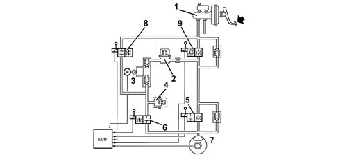
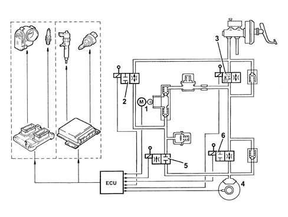
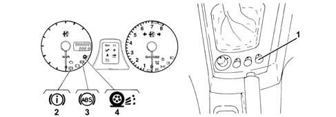

3350A anti - spin regulation devices
- Path
- Descriptions > 33 BRAKING SYSTEM > 3350 DRIVE CONTROL' > 3350A anti - spin regulation devices
- Kind
- system description
- Applies to
- all engines; all production periods
- Interactive page
- https://sloeber94.github.io/elrnDB-a156/en/#/3232926
Applies to: all engines; production: da 03/02 a 09/03, da 10/03
CONSTRUCTION FEATURES
INTRODUCTION
In addition to the normal functions carried out by the ABS 5.3 3340 A(B.S. ANTI-LOCK BRAKING SYSTEM .) all the versions are equipped with A.S.R. (Antislip regulation).
This function intervenes when the A.B.S. control unit detects, via the signals received from the active sensors, that the speed of one or both drive wheels is different from that of the driven wheels (slipping).
The A.B.S. control unit notifies the engine management control unit, via the CAN line, of the existence of slipping and requests a reduction in torque.
Control system
According to the vehicle driving conditions, two different control systems are activated without the driver operating the brake pedal in any way:
In the case of excessive power with both drive wheels slipping the following takes place:
- an instant reduction in the ignition advances (petrol versions);
- a reduction in the butterfly opening angle (petrol versions);
- intervention with the injection times (JTD versions);
- a modulating action of the braking system at the drive wheels.
In the case of only one drive wheel slipping, the following takes place:
- an instant reduction in the ignition advances (petrol versions);
- a reduction in the butterfly opening angle (petrol versions);
- intervention with the injection times (JTD versions);
- a braking action at the wheel which is slipping, producing a resistant torque. As a result, the differential transmits the same torque to the wheel with better grip.
Any failures which involve the exclusion of the A.S.R. system are only signalled by the warning light in the instrument panel coming on.
Button/warning light
A button allows the A.S.R. antislip function to be excluded; this is signalled by the LED in the button lighting up.
Operation
Intervention during braking
With the brake pedal depressed, the electronic control unit:
- does not supply the solenoid valve (N.C.) (8);
- does not supply the solenoid valve (N.A.) (9).
In this way, the system operates during the following stages:
- pressure increase,
- pressure maintenance,
- pressure reduction, as described in the Bosch 5.3 A.B.S..

1 - Master cylinder 2 - High pressure accumulator 3 - Pump 4 - Low pressure accumulator 5 - Pressurizing solenoid valve 6 - Discharge solenoid valve 7- Brake calipers 8 - Inlet solenoid valve 9 - Operating solenoid valve
A.s.r. intervention
If one/both of the drive wheels is/are slipping, then the electronic control unit:
- supplies the hydraulic pump (1);
- supplies the (N.C.) solenoid valve (2);
- supplies the (N.A.) solenoid valve (3).
Therefore the pressure produced by the pump (1) arrives at the brake caliper passing through the solenoid valve (6).
The operating pressure for the brake caliper is modulated by the solenoid valves (5) and (6).
In addition, the A.B.S./A.S.R. control unit notifies the engine management control unit (CAN line) of the presence of slipping. The latter, decreases the torque supplied by the engine with:
a reduction in the ignition advances (petrol versions);
a reduction in the butterfly valve opening (petrol versions);
intervention on the injection times (JTD versions).

1 - Pump 2 - Inlet solenoid valve 3 - Pilot solenoid 4 - Brake calipers 5 - Pressurizing solenoid valve 6 - Discharge solenoid valve
Applies to: engines: 3.2 V6; production: da 03/02 a 09/03, da 10/03
Warning light operation
In the case of problems, the ASR system switches off automatically and the ASR warning light in the instrument panel and the ASR warning light on the button come on constantly.
If the ASR system is not working properly, the vehicle behaves like a version on which this system is not fitted.

1 - ASR warning light in button 2 - EBD warning light in instrument panel 3 - ASR warning light in instrument panel 4 - ASR warning light in instrument panel
The table below summarizes the warning light readings in the different operating conditions.
System status | ASR warning light on button | EBD warning light in instrument panel | ABS warning light in instrument panel | ASR warning light in instrument panel | |
|---|---|---|---|---|---|
Check (4s) | EBD/ABS/ASR OFF for the first 500ms | ON | ON | ON | ON |
Running | EBD/ABS/ASR ON | OFF | OFF | OFF | OFF |
ASR deactivated manually | EBD/ABS ON ASR OFF | ON | OFF | OFF | ON |
EBD faulty | EBD/ABS/ASR OFF | ON | ON | ON | ON |
EBD faulty | EBD ON ABS/ASR OFF | ON | OFF | ON | ON |
TC/ASR faulty | EBD/ABS ON ASR OFF | ON | OFF | OFF | ON |
Insufficient brake fluid level or parking brake on | EBD/ABS/ASR ON | OFF | ON | OFF | OFF |
ASR in action | EBD/ABS/ASR ON | OFF | OFF | OFF | INTERMITTENT |